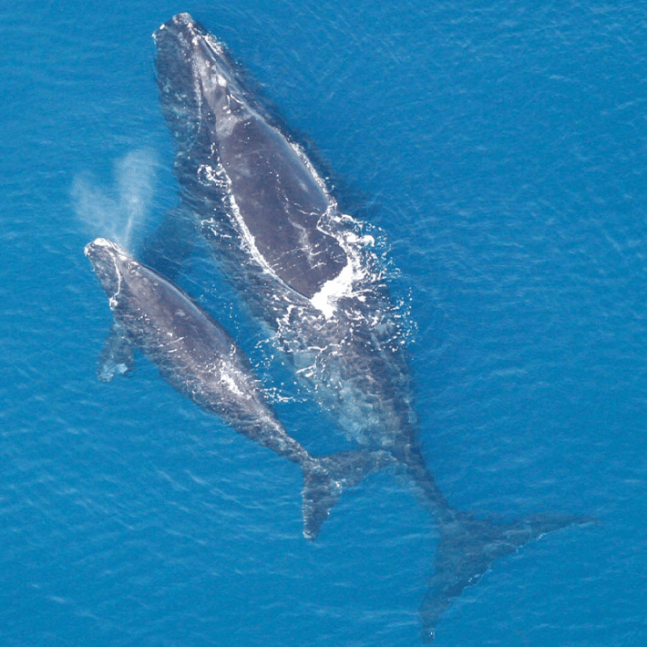
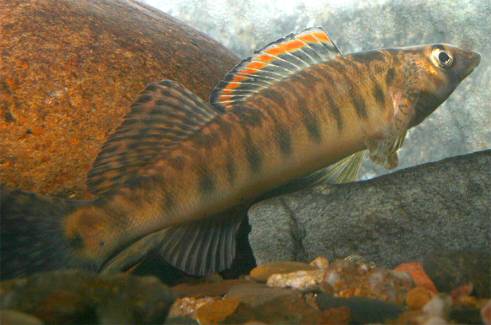

Green sea turtles are back. Right whales are increasing their numbers. A fish in Virginia has much more room to swim. In what seems like a rare moment, a handful of endangered species have recently experienced conservation wins.
Here are a few of the species making a comeback, for the moment:
Green sea turtles
These charismatic marine reptiles are on the upswing, according to a recent report from the International Union for Conservation of Nature (IUCN). The IUCN’s decision to change the conservation status of the species—in a substantial swing from “Endangered” to “Least Concern”—mainly came from data indicating a 28 percent increase in the average annual abundance of egg clutches, which the green sea turtles lay and bury on sandy, tropical and subtropical beaches across the world.
Green sea turtles can grow three to four feet long and live for up to 70 years or more. They also are slow to mature, only reaching reproductive age in their mid 20s-30s. So their recovery speed can be slow. Researchers documented about 526,000 clutches of eggs per year in 2024, where previous year, the average was closer to approximately 419,000 per year. Each individual clutch can contain up to 120 eggs. Although many eggs and younger turtles do not survive to create clutches of their own. Protection of sensitive nesting beaches, limiting accidental catches of turtles in fishing gear, and laws against hunting the turtles have likely aided in their recovery.
While this is promising news, the IUCN cautions that the increases in turtle numbers are uneven. Some subpopulations aren’t yet seeing better days—for example, green sea turtles in the North Indian Ocean, are still listed as “Vulnerable,” and in the Maldives they remain “Endangered,” according to the Olive Ridley Project, a sea turtle rescue, conservation, and education nonprofit. “These local and regional disparities remind us that progress in one part of the world does not mean security everywhere,” the organization said in a statement.
North Atlantic right whales
These massive marine mammals haven’t quite stepped back fully from the precipice of extinction. But North Atlantic right whales have enjoyed a few consecutive years of population growth. Most recently, the North Atlantic Right Whales Consortium shared an estimate indicating that the critically endangered species increased by 2.1 percent from 2023 to 2024.

Pcb21 / Wikimedia Commons.
North Atlantic right whales can grow to more than 40 feet long and tend to travel in pairs. Total population numbers are low, though—there were 376 whales estimated in 2023 and 384 in 2024—so their total increase is modest. But this small bump in numbers is the latest in a few years of such rises after an estimated low point of 350 whales in 2020. Right whales were hunted to near extinction until the 1960s, when commercial whaling bans went into effect across the world.
Researchers who closely monitor the species’ population have noted no deaths and fewer significant injuries from boat strikes as well as some individual whales birthing calves for the first time. “The slight increase in the population estimate, coupled with no detected mortalities and fewer detected injuries than in the last several years, leaves us cautiously optimistic about the future of North Atlantic right whales,” Heather Pettis, who leads the North Atlantic Right Whale Consortium, told PBS News.
Populations have increased before, and in 2011 there were an estimated 481 of these mammals in the sea. So with population numbers so low, robust conservation measures will be needed to ensure the long-term viability of the whales’ population numbers. ”What we’ve seen before is this population can turn on a dime,” Pettis said.
Roanoke logperch
This lovely fish, a species of freshwater darter that inhabits streams and rivers in Virginia and North Carolina, recently moved from “Endangered” to “Vulnerable” in the eyes of the United States Fish and Wildlife Service. When it was listed as endangered in 1989, the Roanoke logperch swam in only 14 streams within its range. By 2019, that range had more than doubled, to 31 streams in Virginia and North Carolina.

USFWS/Southeast / Wikimedia Commons.
The key to the fish’s successful recovery? Dam removal and the subsequent restoration and connection of thousands of miles of habitat, where Roanoke logperch feed along rocky streambeds, slurping up aquatic insects and other prey items. Once habitats were restored, conservation groups reintroduced fish into them, increasing overall populations.
But some conservation groups are urging caution, saying that the U.S. Fish and Wildlife Service did not adequately account for the impacts of a gas pipeline called the Mountain Valley Pipeline that began operating in June 2024. Also, the devastating hurricane flooding in North Carolina last year disrupted many of the freshwater ecosystems in the fish’s range. “The efforts and investment from agencies and organizations to reconnect and reintroduce the Roanoke logperch to former habitats should be celebrated, but full delisting seems premature as threats to the region from pipeline construction and hurricane flooding remain,” Ridge Graham, program manager for Appalachian Voices North Carolina, said in a statement. “It is difficult to relist a species once it has been removed.” 
Lead image: Kris Mikael Krister / Wikimedia Commons.